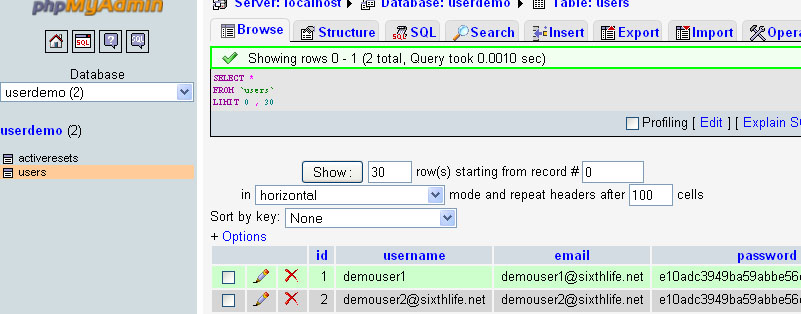
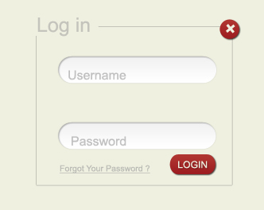

“Forgot Password Script” Documentation by “SixthLife” v1.0
“Forgot Password Script”
Thank you for purchasing Forgot Password Script. If you have any questions that are beyond the scope of this help file, please feel free to email via my user page contact form here. Thanks so much!
Table of Contents
- Main Files
- Database
- Simple Integration
- Detailed Integration
- Customize Design
- Customize Script
- RecoverPas Class
A) File Structure - top
- requestreset.php User can enter username or email to request a password reset link from this page.
- resetpassword.php User clicks on the password reset link sent to their email address and resets password on this page.
- resetinvalid.php User redirected to this page when password reset link is invalid or expired.
- includes contains configuratuion file, functions and classes.
- class.recoverpas.php Recover Password class contains all the methods used throughout the script.
- rconfig.php Configuration file that has database information.
- rfunctions.php Contains only one function used for connecting to database.
- admin.css Css file - can be modified to change font color, page backgrounds, buttons etc.
- installr This folder contains all the files needed for installtion of script. This folder should be deleted after installtion is complete.
B) Database - top
Check below a screenshot of a sample database that can work with forgot password script. The Forgot Password Installer helps you create/ select tables needed in your database.
Two tables are needed for forgot password script - users table and activeresets table.
A users table is basically a table containing usernames and passwords of users.
- users table has id, username, password and email column as a minimum.If an email column is not present then the username should be an email so that a password reset email can be sent.
- activeresets table

B) Simple Integration - top
Prerequisites: Your project has a User Login Page and User Management, Admin or User's Area.
Simple Integration lets you quickly integrate the "Forgot Password" script in your new or exisitng website/ project's user management system.
Integration Steps:
Please note that you can navigate to the previous pages to adjust the information you have entered by using the next and previous buttons towards the bottom of the page.
- Extract ForgotPasswordScrip.zip.
- Upload the ForgotPassword folder to your server in the desired location.
It is advised to rename the forgot password folder before uploading for security reasons.
Navigate to http://(location of Forgot Password Script Folder)/installr/ in your browser to start the installation.
If you uploaded the script in your root directory your path is http://yourdomainname.com/ForgotPassword/installr/
You will see the the page to enter database information.
- Forgot Password Installtion - Start
Enter database hostname, database name, database uuser and password. Click "Next".
Your web host can provide this information.
- Forgot Password Installtion - Step 1
On top of the page you see suggesstions for exisitng tables in your datbase that can be your users table. If you are not sure select "Yes". You will be able to view your tables and select the appropriate one in next step.
If you do not have a users table you can create a basic users table with 2 users below.
Table Prefix
If tables in your database are in format someprefix_tablename then someprefix is your table prefix and should be entered here. The table prefix if present in database tables is automatically shown or you have option to type it manually.
Minimum Password Length
You can set the minimum password length, the encryption type and validation that the newly generated passwords by the users will have. Default is 6.
Password Validation
Password Validation specifies validation rules for new passwords that will be generated for users.
alpha to allow only alphabets
alphanumeric to allow only alphabets and numbers only
alphanumeric + special to allow only alphabets and numbers and special characters only
Password Encryption
Password Encrytion specifies password hashing/ encryption type for new passwords that will be generated for users.
None If the passwords in the password column of users table is normat text and not a hashed/encrypted value.
md5 If the Password hashing is of type md5. Note: md5 format is a 32 digit string. ex. e10adc3949ba59abbe56e057f20f883e
sha1 If the Password encryption is of type sha1.
- Forgot Password Installtion - Step 2
Here all tables in your database is shown. Possible User table suggestions are in red. Select the table that is your users table and click "Next".
If you think you do not have a users table click on "Prev" and select "No" to create a basic users table.
- Forgot Password Installtion - Step 3
This page shows the columns for your selected table and automatically tries to match table column to user id, username, password, email, password, first name, and last name columns needed for "Forgot Password" script.
Please select appropriate table columns here.
You can click "Prev" to select another user table if you think this is not the correct users table.
- Forgot Password Installation - Step 4
Make sure all the information entered in previous steps is correct and scroll towards bottom to enter from email, company name and company short name and click "Next".
Enter your Company or Organization name and a short name for your company. This shows in password recovery email.
- Forgot Password Installtion - Finish
Copy the "Forgot Password" hyperlink generate here. and exit the installer.
Do not forget to delete the "installr" folder once you are finished with installtion.
You will need to place the newly created "Forgot Password" hyperlink at the bottom of your login page.
- To match the design of requestreset.php, resetpassword.php and resetinvalid.php with rest of your files you can link it to your stylesheet at line number 16, line number 18 and line number 8 respectively. This step is "Optional".
- Open your user login page or the page in which you want to add the forgot password link in dreamweaver. Paste "Forgot Password" hyperlink below the form. Make sure the relative url in the anchor tag is the correct location of the requestreset.php file.
<a href="requestreset.php">Forgot Password</a>

- Open the login page in your web browser and click on the "ForgotPassword" link. Try resetting password for a user.
C) Detailed Integration (Advanced Users Only) - top
Prerequisites: Your project has a User Login Page.
Deatiled Integration steps are for advanced users who have some experience in website development and PHP.
Forgot Password Script can be integrated in your existing user management system.
Step-By-Step Integration:
- Extract ForgotPasswordScrip.zip.
- Locate rconfig-sample.php file inside ForgotPassword - includes folder
Rename it to rconfig.php
Open rconfig.php in a text editor like Dreamweaver.
Database Connection Information
At Line Number 9,10,11,12 add database information i.e database host name, database name, database user and password respectively.
define('DB_HOST', 'Database Host Name here'); /*Enter the database hostname. */
define('DB_NAME', 'Database Name here'); /*Enter the database name. */
define('DB_USER','Database User Name here'); /*Enter the database user name. */
define('DB_PASS','Database User Password here'); /*Enter the database user password. */
Database Table Prefix
At Line Number 13 add table prefix. If tables in your database are in format someprefix_tablename then someprefix is your table prefix and should be entered here.
If your tablename names do not have a table prefix leave it blank.
define('DB_TABLEPREFIX',''); /*Enter the table prefix in your database here.(optional) */
Users Table Name in Database
At Line Number 15 add user table name. It is the table in your database that has username and password of all users.
define('DB_USERTABLE','Your user table name here'); /*Enter the user table name. */
User Table Column Names
At Line Number 17, 18, 19, 20, 21, 22 you need to identify and enter the column names in users table that contain user's id (primary key), username, password, email(optional if username is an email), first name(optional), Full Name(optional).
define('DB_USERIDCOL', 'id'); /*Enter the database user id column. */
define('DB_USERNAMECOL', 'username'); /*Enter the database username column. */
define('DB_USERPASSCOL', 'password'); /*Enter the database user password column. */
define('DB_USEREMAILCOL', 'email'); /*Enter the database user email column. */
define('DB_FNAMECOL', ''); /*Enter the database username column. */
define('DB_LNAMECOL', ''); /*Enter the database user password column. */
Company Details
At Line Number 24, 25, 26 enter your Company or Organization name and a short name for your company. This shows in password recovery email.
define('FROMEMAIL', 'support@sixthlife.net'); /*Enter the From Email for Password Recovery Email. */
define('COMPANYNAME', 'Satyam Tech'); /*Enter the Company Name. */
define('COMPANY_SHORTBANE', 'Satyam Technologies'); /*Enter the Company Short Name. */
Generated Password
At Line Number 28, 29, 30 enter minimum password length, password validation and password encryption.
Password Validation specifies validation rules for new passwords that will be generated for users.
alpha to allow only alphabets
alphanumeric to allow only alphabets and numbers only
alphanumeric + special to allow only alphabets and numbers and special characters only
Password Encrytion specifies password hashing/ encryption type for new passwords that will be generated for users.
None If the passwords in the password column of users table is normat text and not a hashed/encrypted value.
md5 If the Password hashing is of type md5. Note: md5 format is a 32 digit string. ex. e10adc3949ba59abbe56e057f20f883e
sha1 If the Password encryption is of type sha1.
define('MINPASSLENGTH', '6'); /*Enter the minimum length of passwords that will be generated. */
define('PASSVALIDATION', 'none'); /*Enter the Password Validation alpha, alphanumeric or alphanumeric + special
define('PASSENCRYPT', 'none'); /*Enter the Password Encryption md5, sha1, or none. */
- Import activeresets.sql file from the sql folder in your database.
if you are integrating this in a new project and do not have users table you can import users.sql.
-
To match the design of requestreset.php, resetpassword.php and resetinvalid.php with rest of your files you can link it to your stylesheet at line number 16, line number 18 and line number 8 respectively.
-
Upload all files from the ForgotPassword folder to your server where your login page is uploaded.
- Open your user login page or the page in which you want to add the forgot password link in dreamweaver. Add a hyperlink to requestreset.php file as shown below.
<a href="requestreset.php">Forgot Password</a>
- Open the login page in your web browser and click on the "ForgotPassword" link. Try resetting password for a user.
D) Customize Design - top
The three pages requestreset.php, resetinvalid.php and resetpassword.php can be files with custom design created by you. A form and few lines of php can help you integrate your pages with this script.
- Open your custom designed requestreset.php file in a text editor like dreamweaver.
- Add this code to the very in the requestreset page for database connection.
<?php
include ('includes/rconfig.php');
include ('includes/rfunctions.php');
dbConnect(DB_HOST, DB_USER,DB_PASS, DB_NAME);
?>
- Add this code in the requestreset page to create an object of RecoverPas class and use the initiateReset function to send a pasword reset email.
<?php
include ('includes/class.recoverpas.php');
$forgotpass = new RecoverPas();
$forgotpass->initiateReset();
?>
- Create a form with one text field where username/ email can be entered. The textfield name attribute will be "emailuname".
For example.
<form action="" method="post" > <label for="emailuname"></label>
<input type="text" name="emailuname" value="" maxlength="150" />
<input type="submit" name="submit" value="SUBMIT" />
</form>
NOTE: The form action is blank, method is POST.
A form submit button is added.
The textfield name can be something other than "emailuname". When you change it you need to call the initiateReset method with a parameter. $forgotpass->initiateReset('newusernamefieldname');
- To display any errors that may occur when a user enters wrong username etc. Add this line above the form or any other suitable place.
<?php $forgotpass->printError(); ?>
- To display messages other than errors .
<?php $forgotpass->printSuccess(); ?>
- Open your custom designed resetpassword.php file in a text editor like dreamweaver.
- Add code for database connection as done in requestreset.php page step 2.
- This time you need to call the resetPassword method.
Add the code below just below the database connection code in the resetpassword.php file.
<?php
include ('includes/class.recoverpas.php');
$forgotpass = new RecoverPas();
$forgotpass->resetPassword();
?>
- Create a form with two password fields with name attribute "password" and "rpassword" respectively.
For example.
<form action="" method="post">
<input type="password" class="mycontent" name="password" value="" />
<input type="password" class="mycontent" name="rpassword" value="" />
<input type="submit" name="submit" value="SUBMIT" />
</form>
NOTE: The form action is blank, method is POST.
A form submit button is added.
The password field name can be something other than "password" and "rpassword". When you change the name you need to call the initiateReset method with the new passowrd field names as parameters. $forgotpass->resetPassword(''newpasswordfieldname', 'repeatpasswordfieldname');
- Add a line of code to display erros and messages as you did for requestreset page step 5 and step 6.
The resetinvalid.php you designed can be used as is.
Repalce three files requestreset.php, resetpassword.php and resetinvalid.php with the custom desinged three files that you just created. Make sure you have backup before you replace the files.
C) Customize Script - top
This script can be customize ro have custom password reset email messages sent to your users. The error messages and success messages can have custom text, the passwords can be in a particular format only etc.
Passwords can be in a particular format i.e text format,only text, with minimum length. <br /> By default the passwords allowed on the resetpassword.php page can be any charaters with a minimum length of 6. Allowed conditons for passwords are . len = 6, alpha, alphanumeric, alpha+special, alphanumeric+special
To allow a password with minimum length 10 and containing at least 1 alphabet, number and special character. You need to call resetPassword method on
resetpassowrd.php page line number 9 with a parameter.
$forgotpass->resetPassword(,,'len=10&alphanumeric+special');
- Change Subject Line of the Password Reset Email sent to the users.
In the requestreset.php page below line number 8 add this code to set the Reset Email Subject.
<?php
$forgotpass->resetmailsubj = "New Reset Email Subject";
?>
- Adding a Custom Email Message.
If you decide to have a custom email message. Both HTML and text format Email Messages should be set.
In the requestreset.php page add this code.
<?php //For Text format Message
$textmessage ="Dear {username},\r\n
To reset your password please follow the link below:\n";
{reseturl}\n
Regards\n, my Company\r\n
";
$forgotpass->setResetMessage($textmessage)
?>
<?php //For HTML format Message
$textmessage ="Dear {username},\r\n
To reset your password please follow the link below:\n";
{reseturl}\n
Regards\n, my Company\r\n
";
$forgotpass->setResetMessageHTML($htmlmessage)
?>
NOTE:Use {username} to insert the user's name and
{reseturl} to insert the password reset url i nthe email message body.
- To have custom error and success message in the requestreset.php file line number 8 just after instantiating the recoverpas class call newMessage method like this.
$forgotpass->newMessage('invalid',"Your custom message when username or email is invalid.");
The first parameter that goes inside newMessage method can be
- invalid Default Message: Invalid Username/ Email Address.
- noexist Default Message: This Username/ Email does not exist.
- noblank Default Message: Username/ Email cannot be blank.
- minlength Default Message: Password does not match the minimum length critera.
- alphaonly Default Message: Password can contain alphabets only.
- alphanum, Default Message: Password can contain alphabets and numbers only.
- alphasp Default Message: Password should have alphabets and special characters only.
- alphanumsp Default Message: Password should contain alphabets, numbers and special characters.
- spchar Default Message: Password should have atleast one special character.
- nomatch Default Message: Passwords do not match.
- error Default Message: There was an error.
- tryagain Default Message: There was an Error. Please try again.
- resetsent Default Message: A Password reset email was sent sucessfully.
- passchanged Default Message: Your Password was changed sucessfully.
D) RecoverPas Class - top
class.RecoverPas.php has follwoing public attributes and Method that can be useful.
Public Attributes.
Public Methods.
initiateReset($emailunameinput = 'emailuname')
/*Initiates sending of reset email once user
fills email/ username in the forgot passwod
form.*/
resetPassword($passinput='password', $rpassinput='rpassword', $validations ='len=6')
//len = 6, alpha, alphanumeric, alpha+special, alphanumeric+special
/*Once Reset Password Email is clicked and password
is entered twice this function vlaidates data and
changes password. */
printError()
/* Prints Errors if they occur */
printSuccess()
/* Prints Success messages for example when
a reset mail is sent or when password is
changed */
setResetSubject($emailsubject="")
/*Option method to set a custom subject for the reset email*/
setResetMessage($textmessage="")
/*Optional method to set a custom message in text
format for the reset email. Use {username} and
{reseturl} to insert respective variables. */
setResetMessageHTML($htmlmessage="")
/*Optional method to set a custom message in html
format for the reset email. Use {username} and
{reseturl} to insert respective variables. */
setEncryption($encryption)
/*method to set password encryption method to md5
or sha1 or blank. */
Once again, thank you so much for purchasing this script. As I said at the beginning, I'd be glad to help you if you have any questions relating to this theme. No guarantees, but I'll do my best to assist.
Sixth Life
Note: "Forgot Password" script supports no password hashing/ encryption, md5 hashing or sha1 hashing with default parameters and no salt as of now.
Go To Table of Contents